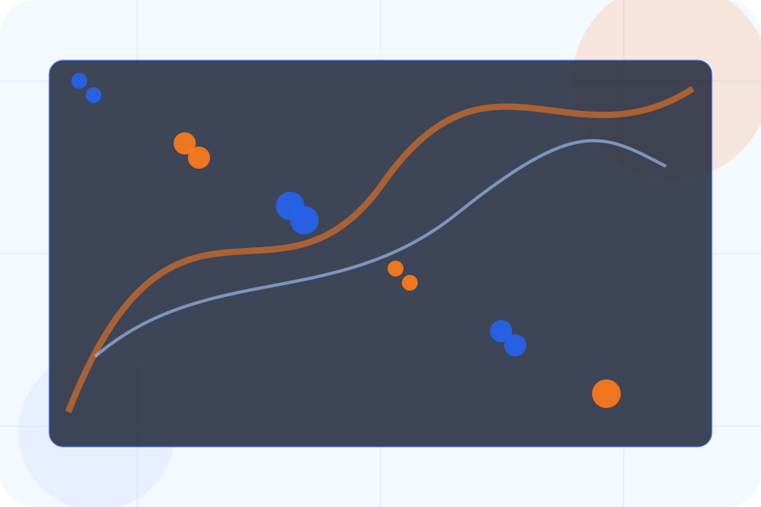
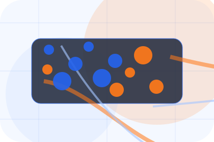
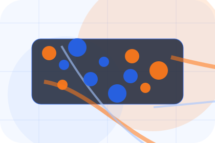
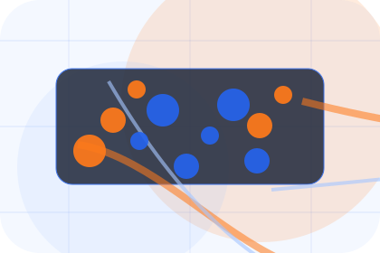
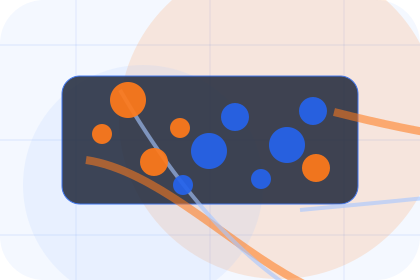
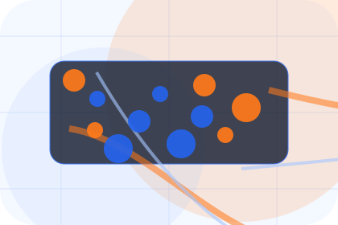
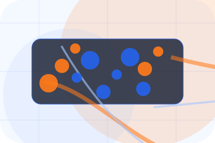
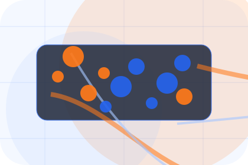
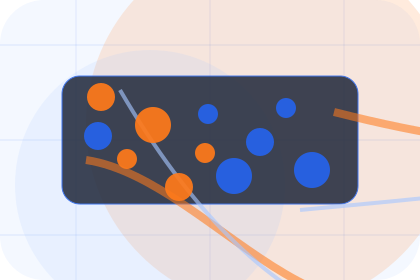
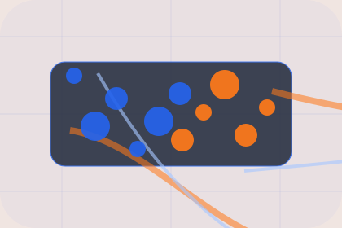

Context
Hubs gives the page a specific angle instead of repeating the navigation label.
Company / 01
Company opens as a clear logistics decision hub: what Chain offers, who it helps, why it matters, and which route to take first.
The first screen combines positioning, proof, primary action, and fast internal navigation, so people can act immediately or compare the rest of the company route with context.
Shipment dashboard hero
Select the closest route and Chain keeps the next step, proof, and follow-up expectation aligned with visibility and delivery control.

Company / 02
Fleet explains the practical scope, best-fit situations, and expected outcome so logistics visitors can compare options without decoding jargon.
The section keeps the offer concrete: what is included, who it is best for, what decision it supports, and which linked route gives the deeper detail.
Explore CompanyChain structures fleet around best fit, what changes, and a clear next route so visitors can compare the block quickly before they request a quote.
Request QuoteCompany / 03
Hubs adds technical context to the company route, using the global freight command structure to support visibility and delivery control before visitors choose a next step.
Chain uses tracking dashboard cards and focused copy to make the decision easier to scan, aligning the section with visibility and delivery control rather than filling space.
Explore Company

Hubs gives the page a specific angle instead of repeating the navigation label.
Company / 04
Standards gives the proof layer for company: standards, evidence, and reassurance that make the next decision feel grounded.
Instead of relying on vague claims, Chain presents visible standards, process cues, and proof artifacts that help logistics visitors judge fit.
Explore CompanyVisible proof that helps visitors believe the claims behind standards.

The quality, safety, or operating expectation this section makes explicit.

What becomes clearer before someone decides whether to request a quote.
Company / 05
Technology adds technical context to the company route, using the global freight command structure to support visibility and delivery control before visitors choose a next step.
Chain uses tracking dashboard cards and focused copy to make the decision easier to scan, aligning the section with visibility and delivery control rather than filling space.
Explore CompanyTechnology gives the page a specific angle instead of repeating the navigation label.
The tracking dashboard cards show what to compare, what to avoid, and what matters most for logistics, delivery & supply chain visitors.
The final cue points to a useful internal route so the section keeps the journey moving.
Company / 06
Team introduces the people, roles, or specialist credibility behind Chain so the decision feels less anonymous.
The copy ties names, roles, credentials, or availability back to the decision on the page instead of treating profiles as decorative biographies.
Explore CompanyThe person, team, or specialist function connected to team is easy to understand.
Credentials, responsibilities, or availability are tied to the visitor's decision, not listed for decoration.
The section explains how to move from profile interest to a practical conversation or booking path.
Company / 07
Reliability shows what changes after the work: clearer decisions, visible progress, and proof points that connect the offer to real outcomes.
The layout connects before-and-after thinking with measured outcomes, making the result easy to scan without promising what the business cannot guarantee.
Explore CompanyThe uncertainty, delay, or missed opportunity visitors bring into reliability.
The clearer, safer, or more valuable state Chain is designed to support.
The visible cue that connects reliability to a believable decision, not a loose claim.
Company / 08
Scale adds technical context to the company route, using the global freight command structure to support visibility and delivery control before visitors choose a next step.
Chain uses tracking dashboard cards and focused copy to make the decision easier to scan, aligning the section with visibility and delivery control rather than filling space.
Explore Company

Scale gives the page a specific angle instead of repeating the navigation label.
Company / 09
Trust gives the proof layer for company: standards, evidence, and reassurance that make the next decision feel grounded.
Instead of relying on vague claims, Chain presents visible standards, process cues, and proof artifacts that help logistics visitors judge fit.
Explore CompanyVisible proof that helps visitors believe the claims behind trust.

The quality, safety, or operating expectation this section makes explicit.

What becomes clearer before someone decides whether to request a quote.
Company / 10
Chain closes the company route with a clear action, a quick reminder of the value, and a low-friction way to request a quote.
Visitors who are ready can use the primary action. Visitors who are still comparing can scan the section links, proof, and support routes before they request a quote.
Request QuoteThe final block keeps the choice simple: act now, compare one more proof route, or send enough detail for a focused response.
Request Quotevisibility and delivery control
A freight-command site with shipment dashboards, network maps, quote modules, and status proof. Company ends with a direct path to request a quote, plus enough context for visitors who still need to compare.

Request QuoteInformation is provided for planning and should be reviewed for the final client, location, and operating rules.